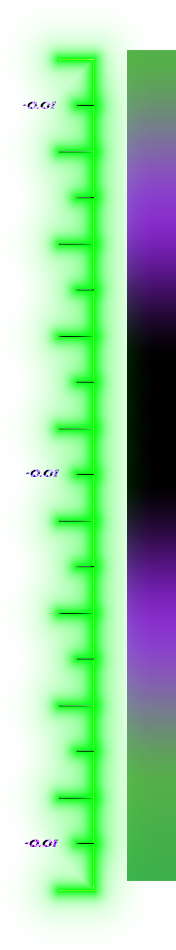

|
Tilted ledgeFeeble grind
1. Rijd evenwijdig aan de ledge, doe een zijwaartse bunny-hop en land met je voorste peg en achterwiel op de ledge.
Ice Pick Grind1. Doe een verticale bunny-hop zodat je voorwiel hoger is als je achterwiel.
Luc-E grind
1. Bunny-hop op de ledge.
|
 |


|